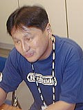
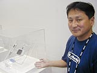
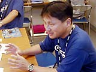

| #5 モバイルアダプタＧＢの開発者インタビュー！ |
| 任天堂株式会社 企画開発部 部長 大和聡さん |
| ――モバイルアダプタＧＢの構想はいつからあったんですか。 大和：構想自体は随分前から有りましたが、具体的な開発を開始したのは２年ほど前からでした。いままでゲームソフトというものは、ＲＯＭカートリッジやＮＰ書き換えにしてもすでに制作し終えたものがユーザーにプレーされています。しかし、通信という手段を使えば、ユーザーの手に渡ったあとから制作したシナリオやキャラクターを追加供給するなど、柔軟な対応が可能となります。本来の意味での“柔らかい”ソフトウェアになるのではないか、との思いでプロジェクトをスタートさせました。 ――今回の発表でも大変な反響がありましたね。 大和：ええ。ステージ発表でも座席に坐りきれなくてたくさんの立ち見のお客さんが出たにも関わらず、大変熱心に見て頂けて非常に嬉しく思っています。  ――お父さん、お母さんの関心も高いようですね。 大和：そうですね。モバイルアダプタＧＢとつながる携帯電話やＰＨＳは小さな子どもさんがあまり手にすることのないものです。パパやママから１日１〜２分だけ借りるだけ、という感じでゲームをより楽しめるイメージで作ってきました。パソコンなどでつなぐインターネットゲームとは違って、１日に１回１〜２分つなぐだけでもおもしろいソフトを提供する、というのが任天堂の基本的な考え方です。 |
| ――『ポケットモンスタークリスタル（仮称）』が同時発売ですが、ポケモンで通信ができるというのはスゴいですね。 大和：ステージの実演では時間の都合でポケモン交換の部分しかお見せしていませんが、バトルやその他におもしろいことがたくさんおこります。その一つが「なぞのタマゴ」のゲットです。そのたまごから、ピヨピヨパンチを覚えたピィなど、普通とは違ったわざを覚えたあなただけのポケモンが産まれてくるかも知れませんよ。これはモバイルアダプタＧＢでゲームを進めていけば誰にでも必ずもらえるものなので、どうぞお楽しみに。 ――最後に、お客さんにメッセージをお願いします。 大和：いままでになかったモバイルシステムという仕組みを使って、新たなポケモンの世界をぜひお楽しみください。また、今後ゲームボーイアドバンスで出る多くのソフトもモバイルアダプタ対応にしていく予定です。ますます通信コンテンツも広がっていきますので、期待していてください。 |
|
|